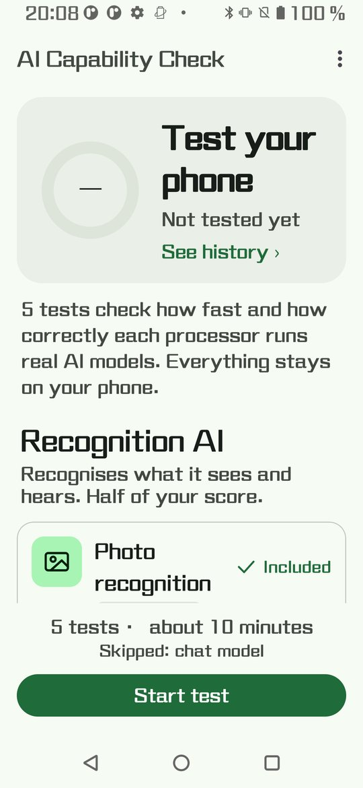
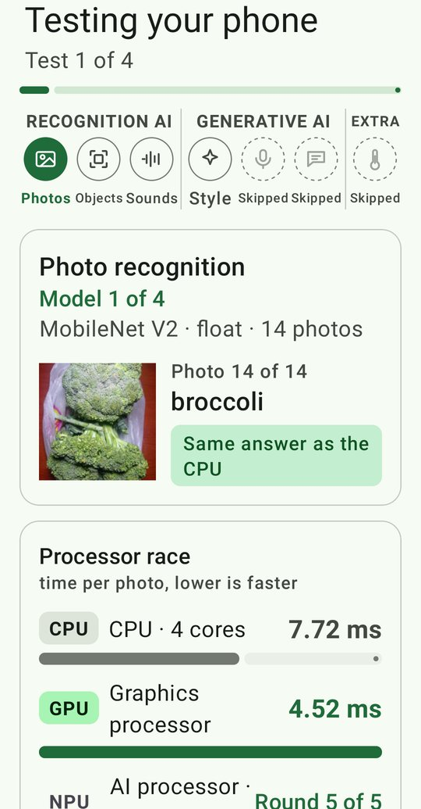
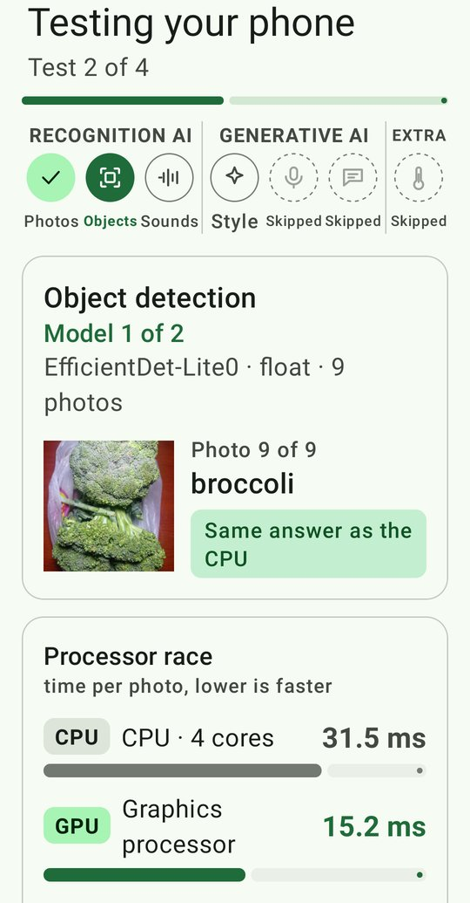
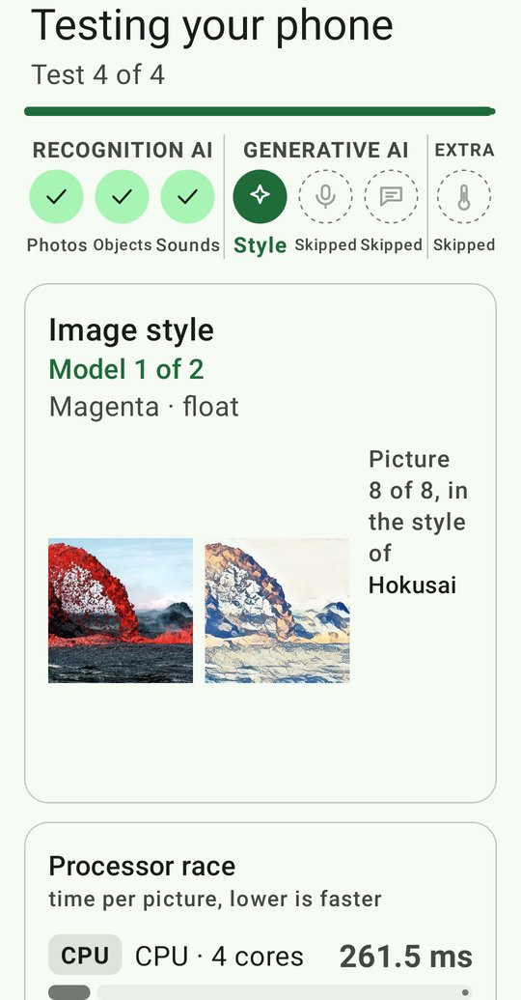
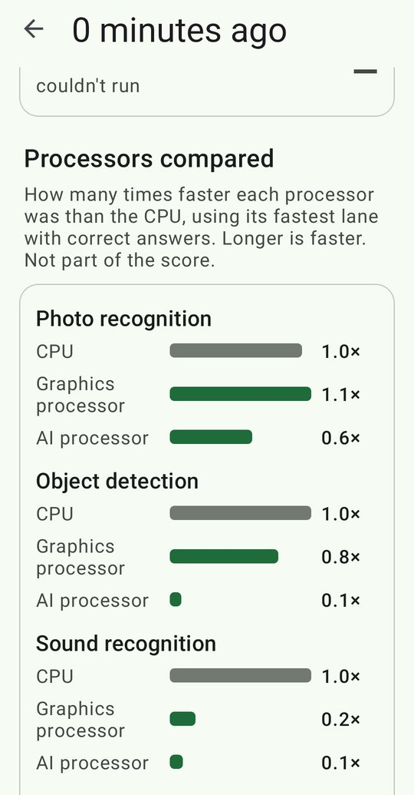
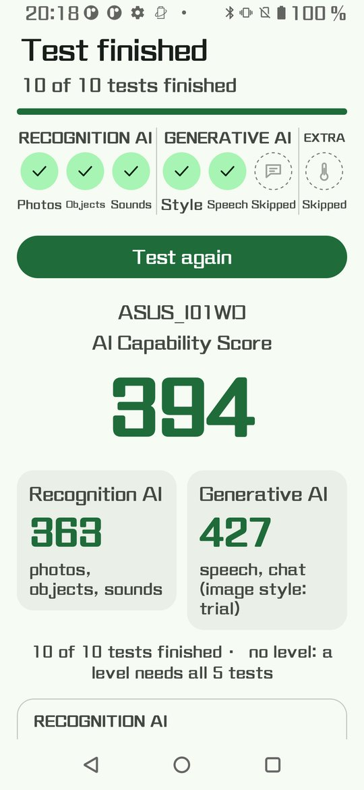

OnDevice AI Meter
run --cpu --gpu --npu
How fast is your phone at AI? OnDevice AI Meter runs real AI models on your phone's CPU, graphics processor and AI processor, checks that each one gives the right answers, and turns the speed into one score. Everything runs offline.

- Android 11+ (API 30)
- 4 GB of RAM or more
- Free on Google Play
What it does
- Recognition AI: recognises photos, finds objects and identifies sounds.
- Generative AI: restyles a photo, writes down speech and chats with an offline language model (Qwen3 1.7B).
- A processor race on every test: CPU, graphics processor and AI processor side by side, and only answers that match the CPU count.
- One AI Capability Score (a reference phone on battery = 6000), a level, and the result of every test and processor.
- Optional heat test: how much speed your phone keeps as it warms up. The app stops by itself if it gets too hot.
- Your test history stays on your phone. Ads never load or show while a test runs.
Screenshots






Questions
What does it test?
Six tests in two groups. Recognition AI: photo recognition, object detection and sound recognition. Generative AI: image style, speech to text and a chat model (Qwen3 1.7B). Each runs on the CPU, the graphics processor and, where the phone allows it, the AI processor, and every processor must give the same answers as the CPU before its speed counts.
Is anything uploaded?
Your test results are not. The tests run offline on your phone and the results stay on it. The app sends anonymous usage statistics and crash reports (Firebase), and the ads come from Google AdMob, which follows the choice you make in the consent form. The chat and speech models are downloaded once, only when you tap Download.
What does the score mean?
A reference phone, a recent flagship, scores 1000 in each of the six tests on battery, 6000 in total; a test twice as fast scores 2000. The score is the sum of the Recognition and Generative halves, each the sum of its three tests, and one of five levels gives a quick read: Basic, Capable, Advanced, Flagship and Cutting-edge.
How long does it take?
About 10 to 25 minutes for everything, depending on the phone and which tests you include. An optional heat test adds 2 minutes; the app stops by itself if the phone gets too hot.
Which phones are supported?
Android 11 or later with 4 GB of RAM or more. At launch Google Play offers it on phones with chips we have tested; more follow as results come in.
More: all questions and answers (also in Spanish, French, Portuguese and Chinese), how we test and the privacy policy.
Get it
Free on Google Play. Android 11 or later.

Also from Simplicity.IO: Mainline Module Info and Linux Terminal Helper.